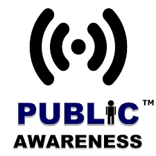
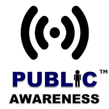
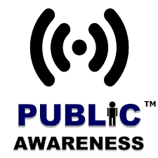

Animal testing involves the use of non-human animals in experiments to test the safety, efficacy, and biological activity of products and substances. It is commonly conducted in various industries, including pharmaceuticals, cosmetics, chemicals, and medical research. Here’s a breakdown of the products and services that often involve animal testing:
1. Pharmaceuticals
Products: Prescription drugs, vaccines, and over-the-counter medications.
Services: Preclinical trials where new drugs are tested for toxicity, efficacy, and side effects before moving to human trials.
2. Cosmetics and Personal Care Products
Products: Skin creams, shampoos, makeup, perfumes, and deodorants.
Services: Safety testing for skin irritation, allergic reactions, or toxic effects, ensuring the products are safe for human use.
3. Chemical Safety Testing
Products: Household cleaning agents, industrial chemicals, and agricultural products like pesticides and herbicides.
Services: Toxicity and environmental impact assessments to ensure these chemicals do not cause harm to humans, animals, or the environment.
4. Medical Devices
Products: Implants, surgical instruments, and diagnostic tools.
Services: Animal models are used to test the safety and functionality of these devices in living organisms before they are approved for human use.
5. Biotechnology
Products: Genetically modified organisms (GMOs), gene therapies, and biologics.
Services: Research into new biological products often involves animal testing to study the effects and biological interactions.
6. Food Additives and Supplements
Products: Preservatives, flavor enhancers, color additives, and nutritional supplements.
Services: Testing the safety and long-term health effects of these additives and supplements in animals.
7. Veterinary Medicine
Products: Animal vaccines, medications, and nutritional products.
Services: Testing is conducted on animals to ensure the safety and effectiveness of veterinary products.
8. Toxicology Testing
Products: Any substance (pharmaceuticals, chemicals, cosmetics) that requires a toxicity profile.
Services: Acute, sub-chronic, and chronic toxicity tests to determine potential health risks for humans and other animals.
Ethical Considerations and Alternatives
Regulations: Many countries have regulations requiring animal testing for certain products, particularly in the pharmaceutical and chemical industries.
Alternatives: Increasingly, alternatives such as in vitro (test tube) studies, computer models, and human-based testing methods are being developed and encouraged to reduce or replace animal testing.
There is a significant push for the adoption of cruelty-free products, and some industries, especially cosmetics, are moving towards non-animal testing methods.
An NGO focused on stopping animal testing typically offers a variety of products and services
aimed at advocacy, education, and support for alternatives to animal testing
Petition Drives: Organizing petitions to influence policy changes and legislation against animal testing.
Public Awareness Campaigns: social media, print, and broadcast campaigns to raise awareness about the issues associated with animal testing.
Lobbying: Engaging with lRunningawmakers and regulatory bodies to promote the adoption of cruelty-free regulations and legislation.
.
Support Cruelty-Free Brands
Buy Cruelty-Free Products: Support brands that do not test on animals by purchasing cruelty-free cosmetics, household items, and other products.
Use Certifications: Look for certifications like the Leaping Bunny logo or PETA’s cruelty-free endorsement to identify brands that have committed to non-animal testing practices.
Promote Vegan Products: Vegan beauty and personal care products are often cruelty-free because they avoid animal-derived ingredients and animal testing.
.
Educate and Raise Awareness
Inform the Public: Share information about the realities of animal testing and the availability of alternative methods through social media, community events, and outreach campaigns.
Support Advocacy Organizations: Partner with or donate to organizations such as the Humane Society International (HSI), People for the Ethical Treatment of Animals (PETA), or Cruelty-Free International, which actively campaign against animal testing.
Organize and Participate in Petitions: Participate in and share petitions that demand governments and companies shift toward cruelty-free testing alternatives.
Lobby for Corporate Change
Pressure Companies: Contact companies directly to express concerns about animal testing, asking them to adopt cruelty-free practices.
Encourage Industry Investment: Advocate for industries to invest in the research and development of alternative methods that do not rely on animal models.
Promote Corporate Transparency: Urge companies to be transparent about their testing practices, encouraging them to publish information on their efforts to reduce animal testing.
Push for Funding of Alternative Research
Government Grants: Support policies that increase government funding for the development of alternatives to animal testing.
Private Sector Investment: Encourage investment from the private sector into research for innovative non-animal testing methods.
Academic Research: Advocate for universities and research institutions to prioritize and fund research into alternatives to animal testing.
in Scientific and Medical Communities
Ethical Review Panels: Encourage the establishment of institutional review boards (IRBs) to ensure the necessity of animal experiments and evaluate the potential for alternatives.
Promote Data Sharing: Support the creation of databases and systems that allow researchers to share data, reducing the need for redundant animal testing across studies.
Support International Agreements
Collaborative Efforts: Engage with global movements to create international standards that push for the elimination of animal testing in favor of validated alternatives.
Work with Trade Agreements: Encourage countries to include provisions on animal testing in trade agreements, favoring cruelty-free products and methods.
Ethical Consumer Behavior
Boycott Products Tested on Animals: Refuse to purchase from companies that continue animal testing, shifting consumer demand toward cruelty-free options.
Spread the Word: Use your voice to inform others about ethical consumer options and how to recognize cruelty-free labels.

.jpeg)
.jpeg) 

.jpeg)